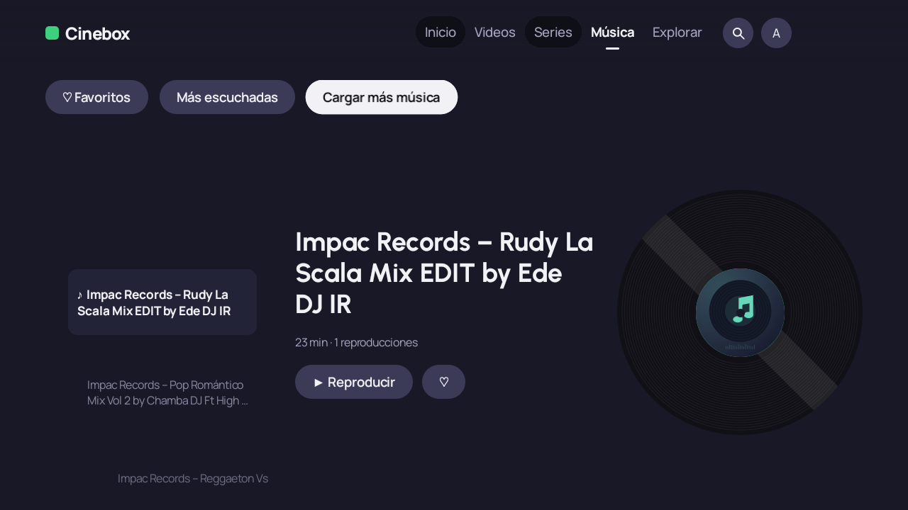
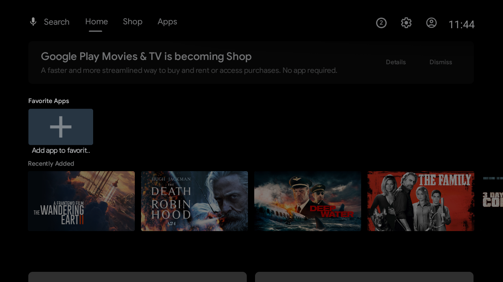
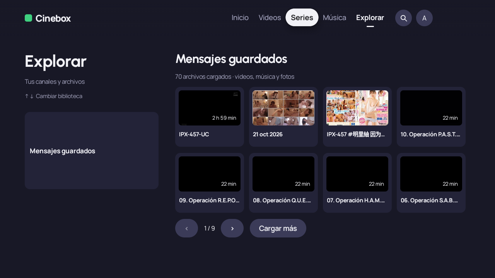
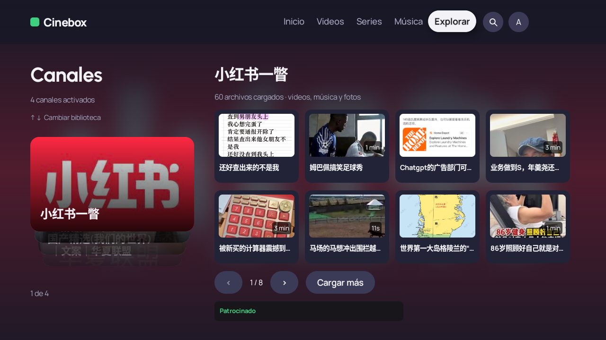

Tu biblioteca personal de Telegram optimizada para Android TV y Google TV. Sin servidores, sin complicaciones.
Descargar APKCinebox convierte tu cuenta de Telegram en un centro de medios estilo Netflix. Organiza tus videos, fotos y música directamente desde tus canales privados y Mensajes guardados.
Reproduce contenido mientras se descarga. Gracias a Media3 y TDLib, la reproducción es instantánea y fluida.
Interfaz nativa construida con Compose for TV. Totalmente navegable con el control remoto, sin punteros ni gestos táctiles.
Usa hashtags para organizar series y categorías. Tus canales privados se convierten en filas de contenido automáticas.



